Установка GIT
Установка системы управления версиями Git в Windows 10 почти ничем не отличается от установки любых других программ. Инсталляция выполняется в полуавтоматическом режиме с помощью пошагового мастера-установщика. Посетите страницу загрузки версии Git для Windows и скачайте установочный файл приложения. Имеются редакции для 32-битных и 64-битных Windows. На этой же странице можно скачать портативные версии программы.
Рекомендуемые настройки
Процедура установки Git Windows включает несколько шагов, менять настройки при этом не обязательно. Программу можно установить в той конфигурации, которую предлагает сам мастер-установщик.
Запустите установочный файл программы, примите лицензионное соглашение. Нажмите «Next».
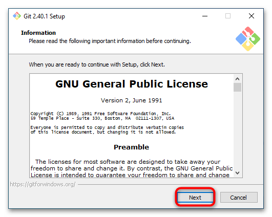В следующем окне установщика выберите нужные компоненты. Так как все необходимые для работы компоненты уже отмечены, этот шаг можно пропустить. Если вы хотите разместить иконку приложения на рабочем столе и включить автопроверку выхода новых версий, отметьте флажками опции «On the Desktop» и «Check daily for Git for Windows Updates». Нажмите «Next».
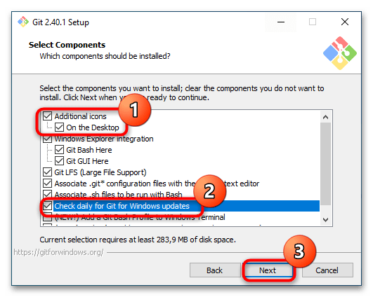Укажите, если нужно, папку для создания ярлыков Git. Лучше всего на этом шаге все оставить по умолчанию. Нажмите «Next».
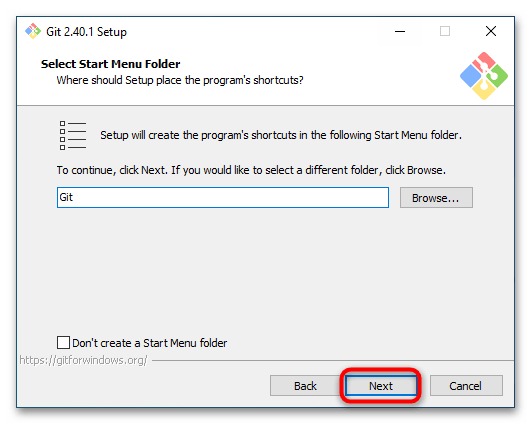В следующем окне выберите из выпадающего списка текстовый редактор, который будет использоваться при работе с Git. Указывайте тот, навыки работы с которым имеете. Нажмите «Next».
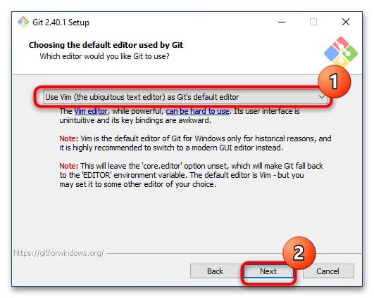Укажите, какое название Git станет присваивать первой ветке в каждом репозитории. По умолчанию программа дает название «master». Нажмите «Next».
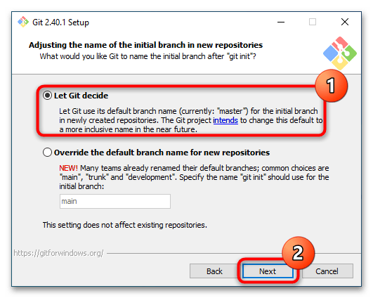Укажите режим использования. Рекомендуется оставить второй, это позволит использовать Git не только из «Командной строки», но также из других оболочек. Нажмите «Next».
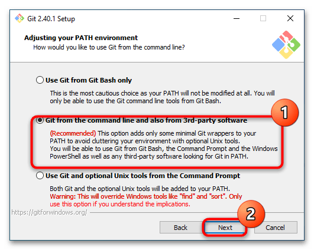Выберите клиент SSH. Если не планируете использовать сторонние клиенты, не меняйте настройки. Выберите библиотеки SSL/TLS. Оставьте все без изменений, то есть «Use the OpenSSL library». Альтернативную опцию можно выбрать в том случае, если предполагается работа с внутренними репозиториями, использующими самоподписанные сертификаты. Нажмите «Next».
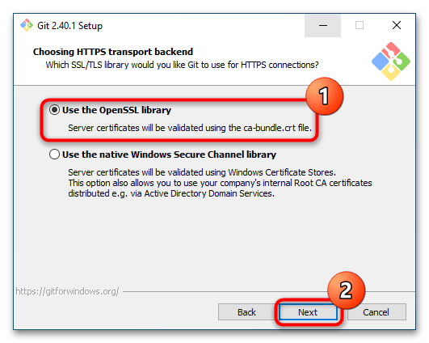На следующем этапе установщик предложит выбрать способ форматирования конца строки. В Windows лучше всего использовать первый вариант. Нажмите «Next».
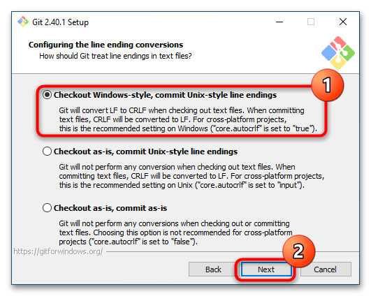Укажите, какой эмулятор терминала будет использоваться. Оставьте тот, который выбран по умолчанию, то есть «MinTTY». Нажмите «Next».
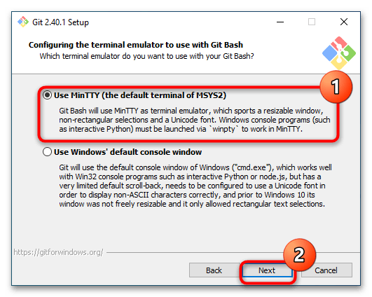Выберите стратегию git pull. Оптимальным является первый вариант. Нажмите «Next».
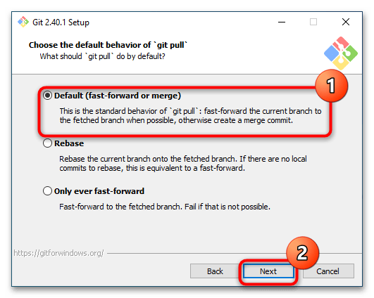Укажите, нужно ли Git запоминать логины и пароли подключения к удаленным репозиториям, используя Credential Manager. По умолчанию опция сохранения данных включена и будет лучше, если оставить ее включенной. Нажмите «Next».
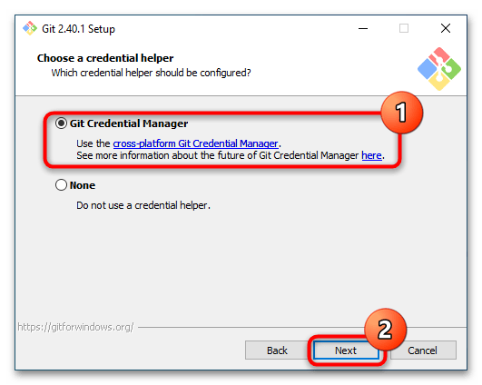Укажите, нужно ли использовать кеширование. Последнее позволяет ускорить работу программы, поэтому отметьте опцию «Enable file system caching». Нажмите «Next».
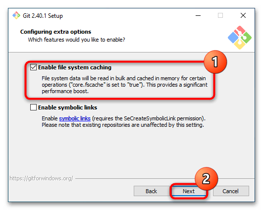На следующем этапе установщик предложит активировать экспериментальные функции. Пропустите этот шаг, просто нажав «Install».
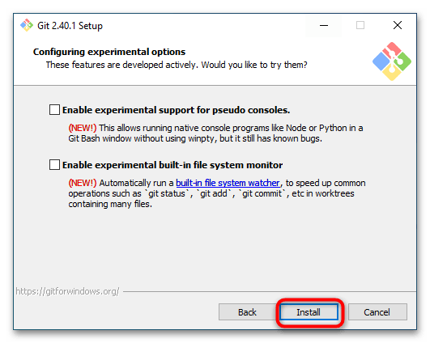Начнется установка программы. Процедура может занять некоторое время, но обычно Git устанавливается за минуту. По завершении инсталляции программа будет готова к использованию.